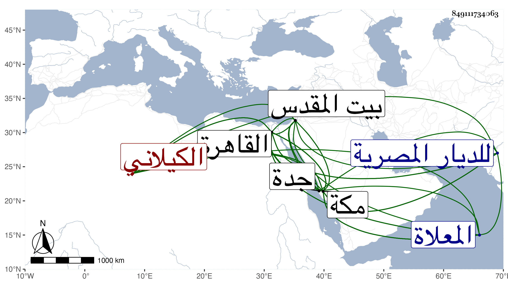

0902Sakhawi.DawLamic.ITO20230111-ara1.EIS1600.849111734063
Biography ID: 849111734063
108
محمد بن أحمد بن محمد بن أحمد الشمس بن الشهاب الخواجا بن الخواجا الكيلاني الأصل نزيل مكة والماضي أبوه ويعرف بابن قاوان . ولد تقريبا قبل العشرين وثمانمائة ونشأ في كنف أبيه فقرأ على بعض الفضلاء متدربا به في النحو والصرف ونحو ذلك ، بل حضر مجلس الشرف على اليزدي واستفاد منه وأكثر الرواية عنه ، وقدم القاهرة مع أبيه في سنة ست وثلاثين فأخذا عن الزين الزركشي في صحيح مسلم ثم عن شيخنا ورجعا وقطن مكة وبلغني أنه أخذ فيها تائية ابن الفارض وبعض شروحها عن بعض المغاربة خفية ، ولقي غير واحد من الفضلاء وانتفع بمذاكرتهم وغيرها مع مداومته في خلوته المطالعة في كتب الحديث والرقائق والتصوف والتاريخ بل قرئ عنده الكثير من ذلك بمحضر من الفضلاء وربما وقعت المباحثة فيه وتزايدت براعته بهذا كله لوفور ذكائه وحسن تصوره ، ثم قدم القاهرة في سنة سبع وسبعين فأكرم الأشرف قايتباي مورده وأقام مدة ثم سافر لبيت المقدس فزاره والخليل ورجع حتى سافر لمكة في موسم التي تليها وكثر تردد الأماثل فمن دونهم لبابه وغمرهم بنواله وبره ولذيذ خطابه ورأوا من أدبه وتواضعه ورياسته ما يفوق الوصف ، وكنت ممن شملني فضله ووسعني معروفه وزاد في الثناء علي جدا حتى في الغيبة بحيث يقدمني على سائر أهل العصر ، وينسب الملك فمن دونه إلى التقصير في شأني ويغتبط بتصانيفي كثيرا وربما قرأ من لفظه بعضها بحضرتي وشهرها في غيبتي ، ورام مني وهو بالقاهرة إسماع مسلم عنده فاعتذرت عن ذلك وكذا تكرر استدعاؤه لي في كثير من مهماته التي يخص بها من يعتقده فما أذعنت وهو لا يزداد في مع ذلك إلا محبة وقال لي مرة لم أرمن سلم من لسان البدر الدميري سواكم . ثم قدم بعد الثمانين فأقام قليلا وتوفيت له ابنة متزوجة بالشريف إسحاق الماضي فدفنت بجوار المشهد النفيسي وانتفع لدفنها هناك الجدام والمجاورون بل والخليفة وأقرباؤه والمكان فإنه أرصد نحو ألفي دينار لعمارته وكانت لها جنازة حافلة وأوقات هنك طيبة هائلة ، ثم رجع إلى مكة وكان له في السيل الشهير بها اليد البيضاء . ومحاسنه جمة . ومات في شوال سنة تسع وثمانين وصلى عليه ثم دفن بتربتهم من المعلاة وارتجت النواحي لموته وصلي عليه صلاة الغائب بجامع الأزهر وغيره وأوصى ببر وخير كثير ، وكان رئيسا جليلا متواضعا شهما متعبدا بالطواف والصيام والصلاة نيرا مكرما لجليسه معظما للعلماء والصالحين سيما أبو العباس بن الغمري بحيث سمى ولده باسمه فائقا في الكرم والبذل وافر العقل زائد الأدب ممدحا سار ذكره في الآفاق وطار اسمه بالسباق وفي مجيئه الأخير للديار المصرية خرج العرب على نائب جدة والركب فلما أبصروه كفوا حياء منه وطمعا في إحسانه فما خيبهم من معروفه ، وبالجملة فقل أن ترى الأعين في معناه مثله رحمه الله وإيانا .
